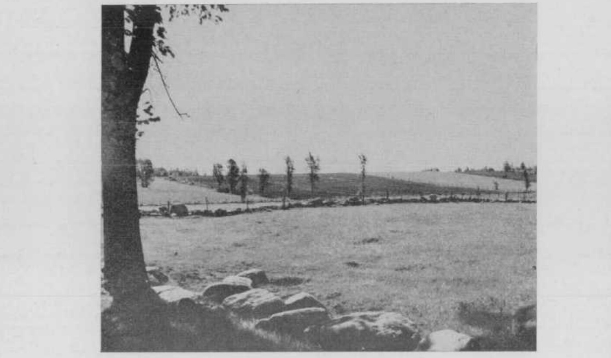
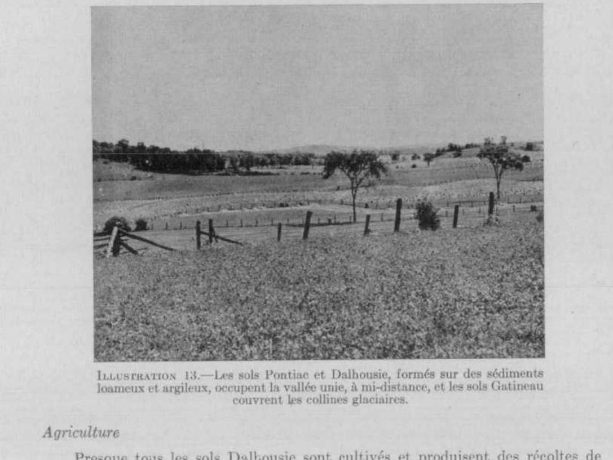
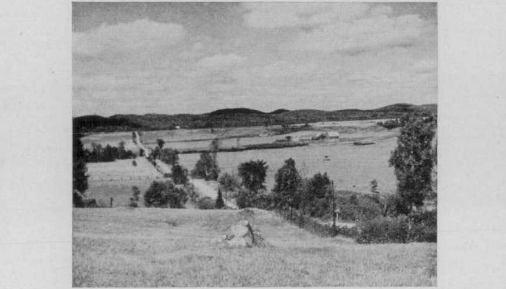
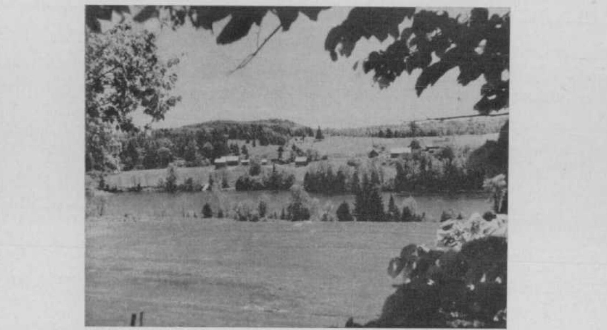

Identification & Caractéristiques Générales
La série Gatineau se développe sur un till morainique de fond dont l'épaisseur varie généralement de 1,2 à 3,6 mètres, reposant sur le socle rocheux précambrien du Plateau laurentien, composé de gneiss, de granits, de quartzites, de gabbros, d'anorthosites et de calcaires cristallins. Ce matériau parental est géomorphologiquement associé aux régions méridionales des hautes terres, à des altitudes comprises entre 150 et 300 mètres. Les sols de cette série occupent des topographies caractérisées par des reliefs vallonnés, montueux, voire fortement accidentés, comprenant des collines aux pentes variées où le substrat rocheux affleure localement en raison de la faible épaisseur du dépôt meuble par endroits.
Sur le plan morphologique et hydropédologique, les sols de la série Gatineau présentent un profil bien drainé caractérisé par une gamme granulométrique étroite, la texture dominante étant un loam sableux. Le profil montre une pierrosité excessive marquée par la présence abondante de gros blocs (boulders) en surface et dans la masse du sol. La perméabilité est généralement rapide à modérée en raison de la texture grossière et de l'absence de nappe phréatique persistante ou de couche restrictive impénétrable autre que le roc sous-jacent. La réaction chimique du sol est acide, traduisant l'origine lithologique silicatée du matériau parental et nécessitant des interventions correctives pour l'optimisation des réactions physico-chimiques.
En raison de la forte pierrosité, de la topographie accidentée et de la présence fréquente de affleurements rocheux, les aptitudes agronomiques des sols Gatineau sont fortement limitées pour la mise en culture intensive et la mécanisation agricole. Les superficies défrichées demeurent restreintes et les parcelles cultivées subissent des contraintes d'accès et un risque persistant de retour à la friche forestière, les secteurs non défrichés étant naturellement occupés par une pessière ou une hetraie-érable à sucre avec présence de feuillus tolérants. La régie agronomique des surfaces exploitées exige un apport régulier d'amendements calciques (chaulage) pour corriger l'acidité, ainsi qu'une fertilisation minérale équilibrée combinant les éléments majeurs (azote, phosphore, potassium) et l'application complémentaire de fumier afin de pallier la faible fertilité naturelle inhérente à ces loams sableux.
Classification Taxonomique & Environnement Pédologique
| Ordre Pédologique | Brunisolique |
|---|---|
| Grand Groupe (SCSS) | Brunisol dystrique |
| Sous-Groupe Taxonomique | Brunisol dystrique orthique |
| Famille Pédologique | Loameuse-grossière, mixte sableux, acide |
| Mode de Dépôt Parental | Morainique |
| Classe de Drainage Naturel | Bien drainé |
| Régime Thermique & Humidité | Frais / Subhumide |
Description Morphologique du Profil Type
Séquences génétiques des horizons pédologiques caractérisant le profil type représentatif de la série Gatineau :
Profil cultivé (agricole) — Comté de Gatineau
✓ Source : Comté de Gatineau — Page 24Couleur Munsell : 10YR 4/4
Structure & Consistance : Granuleuse fine
Description morphologique : Loam sableux fin, brun jaunâtre foncé ou brun foncé (10YR 4/4) 3 ; structure granuleuse fine; très friable et perméable; pH 5.6 à 5.9.
Couleur Munsell : 10YR 5/4
Structure & Consistance : Granuleuse très fine et monogranulaire
Description morphologique : Loam sableux, fin, brun jaunâtre (10YR 5/4 à 5/6); structure granuleuse très fine et monogranulaire; très friable et perméable; pH 5.6 à 5.9.
Couleur Munsell : 2.5Y 4/4
Structure & Consistance : Très fine
Description morphologique : Loam sableux olive (2.5Y 4/4); structure très fine, granuleuse à cuboïde anguleuse; friable; pH 5.6 à 5.9.
Couleur Munsell : Non précisée
Structure & Consistance : Pseudo-laminée à cuboïde ou massive
Description morphologique : Till non altéré de loam gris olive à gris, plusieurs fragments graveleux et pierres de différentes grosœurs; structure pseudo-laminée à cuboïde ou massive; compact; pH 5.6 à 6.0.
Profil forestier (sous boisé) — Comté de Hull
✓ Source : Comté de Hull — Page 34Couleur Munsell : 10YR 4/4
Structure & Consistance : Granuleuse fine
Description morphologique : Loam sableux fin, brun jaunâtre foncé ou brun foncé (10YR 4/4) 1 ; structure granuleuse fine; très friable et perméable; pH 5.6 à 5.9.
Couleur Munsell : 10YR 5/4
Structure & Consistance : Granuleuse très fine et monogranulaire
Description morphologique : Loam sableux, fin, brun jaunâtre (10YR 5/4 à 5/6); structure granuleuse très fine et monogranulaire; très friable et perméable; pH 5.6 à 5.9.
Couleur Munsell : 2.5Y 4/4
Structure & Consistance : Très fine
Description morphologique : Loam sableux olive (2.5Y 4/4); structure très fine, granuleuse à polyédrique anguleuse; friable; pH 5.6 à 5.9.
Couleur Munsell : Non précisée
Structure & Consistance : Pseudo-laminée à polyédrique ou massive
Description morphologique : Till non altéré de loam gris olive à gris, plusieurs fragments graveleux et pierres de différentes grosseur; structure pseudo-laminée à polyédrique ou massive; compact; pH 5.6 à 6.0.
Profil forestier (sous boisé) — Comté de L'assomption
✓ Source : Comté de L'assomption — Page 27Couleur Munsell : 5YR 2/2
Structure & Consistance : Polyédrique à granulaire
Description morphologique : Humus semi-décomposé, brun très foncé (7.5YR-5YR 2/2); 1 pH 5.2-5.4.
Couleur Munsell : 7.5YR 4/2, 5YR 3/4
Structure & Consistance : Polyédrique à granulaire
Description morphologique : Loam sableux brun foncé à brun ou brun rougeâtre foncé (7.5YR 4/2-5YR 3/4); très fins granules parmi les grains de sable; très friable et perméable; quelques fragments graveleux et quelques pierres; pH 5.2-5.6.
Couleur Munsell : Non précisée
Structure & Consistance : Polyédrique à granulaire
Description morphologique : Comme dans l'horizon Bml avec couleur plus pâle.
Couleur Munsell : 10YR 5/4
Structure & Consistance : Polyédrique à granulaire
Description morphologique : Loam sableux brun jaunâtre (10YR 5/4); till glaciaire contenant du gravier, des pierres et des boulders; très ferme; pH 5.4 à 5.8.
Profils Photographiques & Planches de Terrain
Documents iconographiques, figures pédologiques et coupes de terrain documentées dans les mémoires d'inventaire pour de la série Gatineau :




Propriétés Physico-Chimiques & Analyses de Laboratoire
Données Analytiques de Laboratoire
Aucune analyse physico-chimique quantitative de laboratoire (granulométrie par sédimentométrie, pH H₂O/CaCl₂, matière organique Walkley-Black ou bases échangeables) n'a été consignée pour cette unité dans les archives historiques numérisées ou les bases contemporaines EESSAQ/MAPAQ.
Particularités Régionales, Phases & Variantes Pédologiques
Déclinaisons régionales, faciès texturaux, phases d'érosion ou de pierrosité et variantes cartographiées par étude pour de la série Gatineau :
| Étude Régionale | Symbole | Appellation / Phase / Variante | Différenciation avec la série type (Analyse pédologique) |
|---|---|---|---|
| Comté de Gatineau | Gt |
Gatineau loam sableux | Modalité modale de référence (type de base de la série). |
| Comté de Hull | Gt |
Gatineau loam sableux | Conforme à la série type de référence (caractéristiques texturales et drainage identiques). |
| Comté de L'assomption | Gt |
Gatineau loam sableux | Conforme à la série type de référence (caractéristiques texturales et drainage identiques). |
Distribution Pédo-Paysagère & Représentativité Cartographique (Couverture PPS 2026)
- Sainte-Agathe loam sableux fin (SNG) — co-occurrente dans 550 polygone(s)
- Larose loam sableux (LOS) — co-occurrente dans 149 polygone(s)
- Saint-Faustin loam sableux (SFU) — co-occurrente dans 52 polygone(s)
Aptitudes Agronomiques, Hydropédologie & Conservation des Sols
Indicateurs Hydropédologiques & Vulnérabilité à l'Érosion (BDHP 2026)
Interprétation BDHP : Potentiel de ruissellement modérément faible. Infiltration modérée avec textures moyennes à modérément grossières.
Classement selon l'Inventaire des Terres du Canada (ITC / CLI) : Classe 1.
- Potentiel agricole : Terroir adapté aux cultures régionales selon la texture dominante et la régie de drainage.
- Contraintes majeures : Bien drainé. Risque d'engorgement temporaire ou d'excès d'eau printanier.
- Gestion & Aménagement : Drainage souterrain ou superficiel préconisé sur les terres planes. Chaulage et apport organique régulier selon les bilans agronomiques.
- Cultures adaptées : Grandes cultures (maïs, soya, céréales), prairies fourragères et cultures maraîchères selon le contexte géomorphologique.